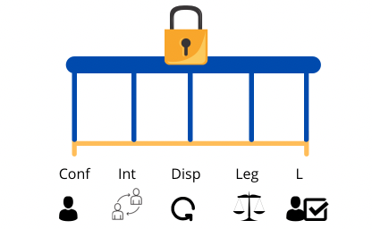
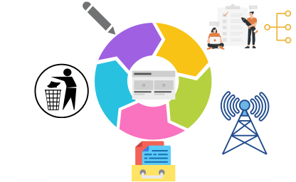
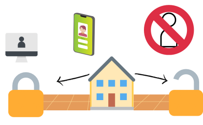

Principios básicos de Redes. Informações dos modelos OSI, TCP/IP.
A segurança da Informação está baseada em 5 suportes ou principios que garantem a proteção dos dados, Um deles é a "Confidencialidade" (Conf) que garante o acesso á informação seja disponível só para usuarios legítimos, ouseja, só para o autor da informaçãoe para quem este autoriza, um outro principio é a "Integridade"(Int) que é a responsável por garantir que nenhuma informação seja alterada sem autorarização do autor; um outro principio é a "Disponibilidade"(Disp) que permite o usuario acessar a qualquer momento; mais um principio é a "Legalidade" (Leg) que garante o seguimento das regras segundo as leis vigentes.
A informação é criada num ambiente interno, ou também pode ser extraída de uma base de banco de dados, dando origem a uma nova fonte, esta informação passa por por um processo de estructuração e re-estructuração para depois ser transmitida para terceiros, ou ser espalhada de um ponto para outro, por exemplo, quando você acessa um link, a informação será transmitida na sua tela, a proxima sequência do ciclo de vida, é o "armazenamento", toda informação para persistir precisa ser armazenada, como por exemplo para consultas futuras e o lugar mais comum para armazenar chama-se banco de dados, e também alguns arquivos físicos. Por último a fase de descarte da informação, ocorre quando a informação não é mais necessária e sem importância, mas o descarte desnecessário pode acarretar graves consequências ou prejuízos.
Não existe um padrão para investimento na proteção, alguns investem mais do que outros, mas foram implantadas 3 formas de proteger os dados:
Física: a parte mais externa, o que signfica o uso de portas,fechaduras, vigias,etc.
Administrativa: Onde existem as políticas de segurança, as normas y como serão executados os procedimentos.
Lógica: Que tem a ver com as permissões sobre os arquivos, o uso de Firewalls, IDS, os perfís de usuarios em aplicações.
Para proteger um ativo, significa que é porque há perigo mundo fora, e existem problemas na hora de proteger "dados" por exemplo,se você tem uma conta, seja numa rede social, num banco digital, ou qualquer plataforma, significa que alguém está cuidando dos seus dados. Protegendo de riscos Naturais tais como: qualquer fenômeno meteorológico, enchentes, fogo, ventos, tsunamis até do ataque do Godzilla. Protegendo de riscos acidentais: erros de usuários, falhas no sistema, queda de energia. E protegendo de riscos intencionais: invasões, terrorismo, chantagem, espionagem, extorsão e outros.
A proteção do seus dados é como uma estrategia de guerra, o invasor ten que atravesar varios obstáculos e diferentes camadas para chegar até onde está a fonte.
Para evitar o máximo possível os problemas de proteção as estretégias são por exemplo: otorgar um privilégio determinado para um usuario e/ou um funcionário,para acessar ao sistema; uso de cãmeras de segurança, vigías, catracas, sistemas biométricos; "recepção" que consiste em toda informação que for entrar precisa passar por um ponto, algo assim como beco de funil, forçando o fluxo por um canal só. Uma outra estratégia consiste na "obscuridade", que trata-se esconder arquivos, caso um invasor entre, ou por erro fica aberta uma "porta".

Principios básicos de Redes. Informações dos modelos OSI, TCP/IP.

Uma poderosa ferramenta para scan ou varredura de redes, de codigo aberto.

O começo fundamental para redes de computadores, de uma forma interativa.

Enumerar e explorar redes I